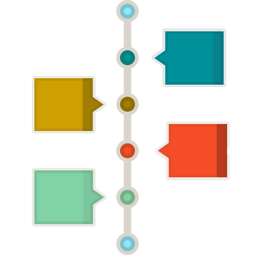

<main>
  <div class="container">
    <div
      class="row d-flex d-flex justify-content-between align-items-center py-5 center-element"
    >
      
      <a
        href="https://github.com/D3vaya/Mr-Git"
        class="linkRepository"
        target="_blank"
      >
        <div class="d-none d-sm-block">
          
          Fork me on github
        </div>
      </a>
    </div>
    <div class="row">
      <div class="col-md-6 col-xs-12">
        <h2 class="py-5 text-xs-center">
          Todos fallamos, pero hay que saber como arreglarlo.
        </h2>
        
        <p class="description text-xs-center">
          Git es la herramienta de versionamiento mas usada en el mundo del
          desarrollo de software. Pero aunque cueste creerlo, hay una gran
          mayoria de devs que no lo utilizan correctamente o simplemente saben
          uno que otro comando. Cuantas veces escuchaste, observaste o quizas tu
          mismo eliminaste la rama y la volviste a bajar por que no supiste como
          solucionar el conflicto 🤪. MrGit nos ayudara con todos estos
          problemas.
        </p>
        <div class="py-4 center-element">
          <div class="">
            <a
              routerLink="/courses"
              class="btn-start d-flex justify-content-center pointer"
            >
              Empezar
            </a>
            <div class="roadmap">
              <a routerLink="/roadmap"> RoadMap </a>
            </div>
          </div>
        </div>
      </div>

      <div class="col-md-6 d-none d-sm-block">
        
      </div>
    </div>
  </div>
</main>
<!-- <footer class="footer-wave">
  
</footer> -->
